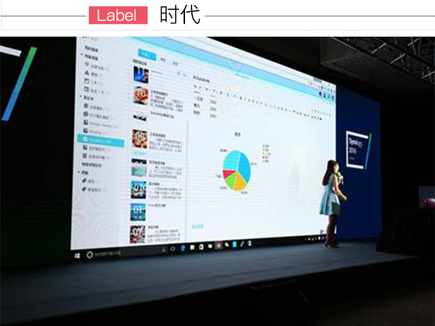

所谓的互联网思维就是用互联网解决互联网面对的问题，这或许是我今天看这片子没在电视上看的一个不谋而合的原因，我想现在是越来越少的人能在一个固定的时间点上，连续十天去看一个10集的片子，互联网解决
这或许是我今天看这片子没在电视上看的一个不谋而合的原因，我想现在是越来越少的人能在一个固定的时间点上，连续十天去看一个10集的片子，互联网解决了这样一个问题。 无论是要用互联网创新商业模式，还是要用互联网改造传统媒体，都必须首先了解互联网本身运行的规律，利用它自身所蕴含的无限资源和潜力。互联网这个新的生态，给我们的生活带来了极大的便利。